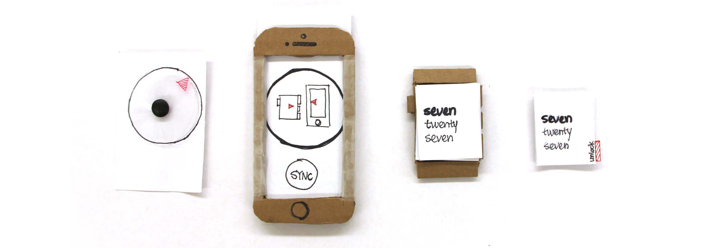
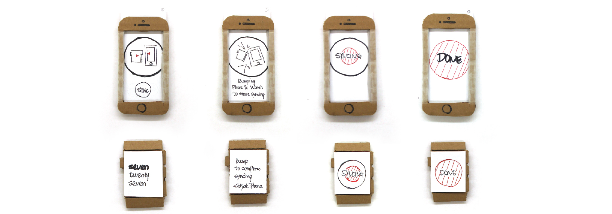
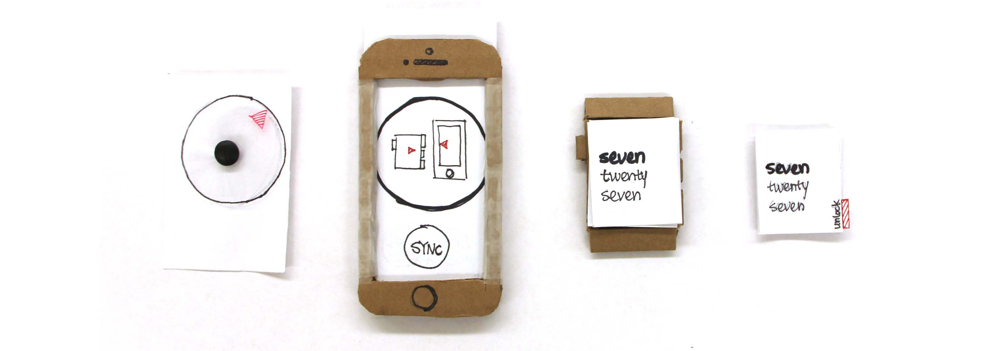
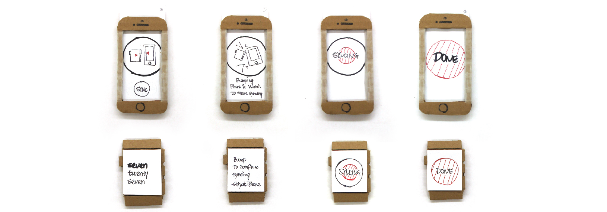
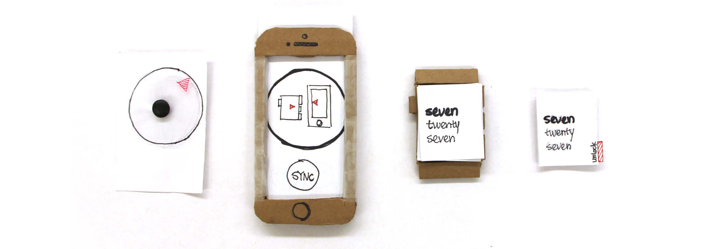
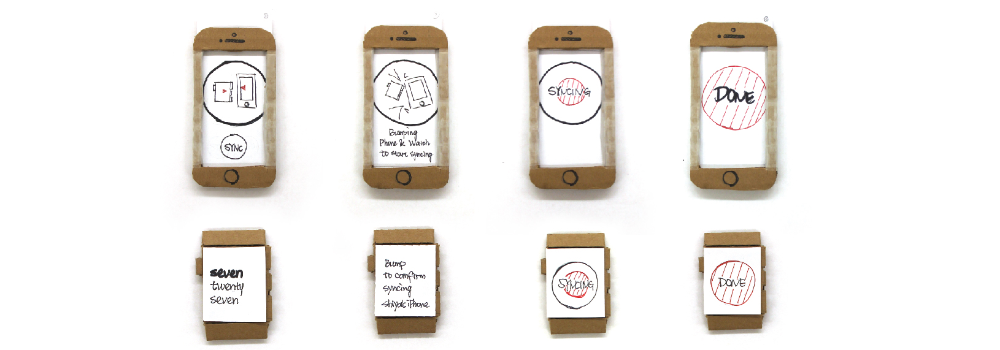

Paper Prototypes
This is all the paper / carboard parts I made.
 





2 Weeks. Jan, 2014
Individual Project, special thanks to David Tianxiao Yang for video shooting.
Paper Prototype, Video Prototype
Project Report, Blog Post, Prototype
This is a two week long course project in the MHCI+D Prototyping Studio Class. We were given a prompt to develop a product concept that involves synchronization of data between the two smart devices. The objective of this project is to practise students' prototyping technique, the choice of prototype is required by the course.
Find It! is my design response to this assignment. Find It is an application that help you to find missing electronics. By using GPS information and proximity sensor, Find it! app locates your smart watch or smart phone using one or the other device.
Here is more detail of my paper prototype of Find It! The following video shows the interaction happen between the two devices. User experience a very simple and easy to use interface to find their device, and bump the phone and smart watch together to finish the find.
This is all the paper / carboard parts I made.


Copyright © 2014 Shiya Liang. All Rights Reserved.